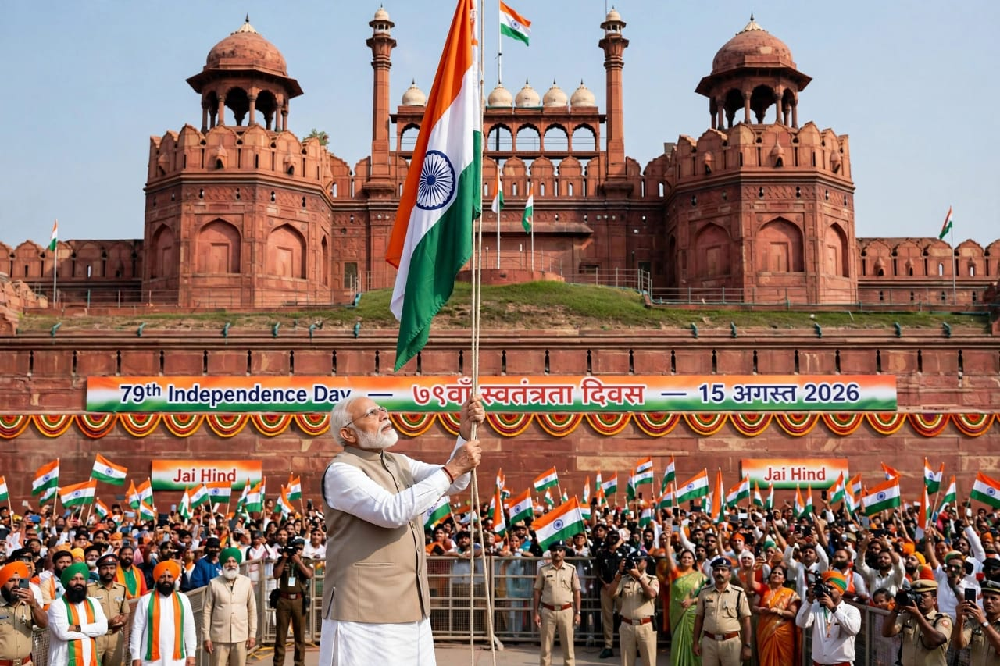
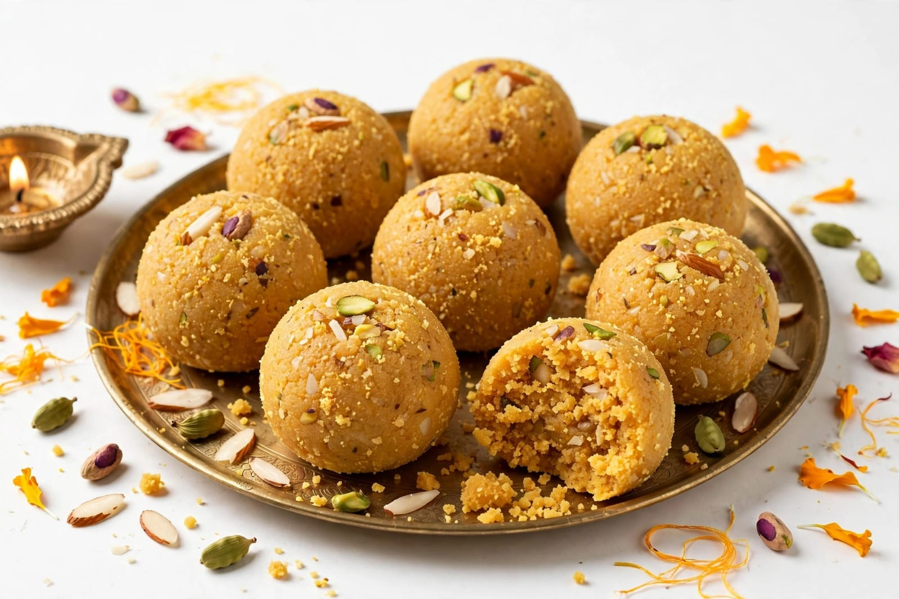
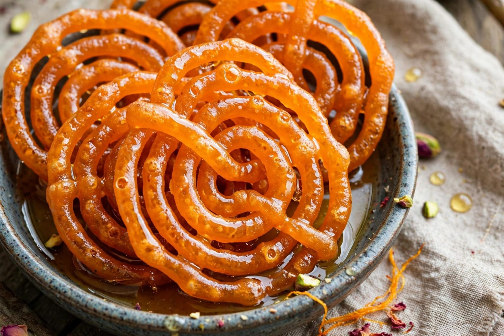
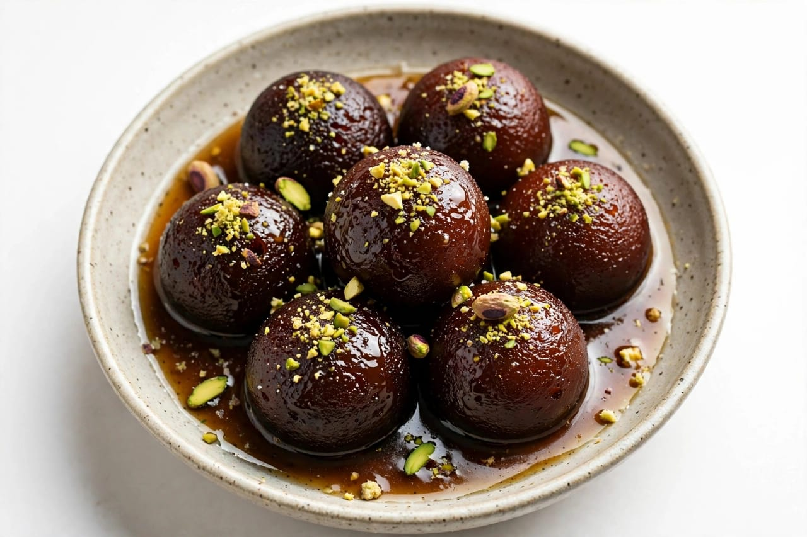

About Independence Day
Independence Day is one of the most important national celebrations of India. It is celebrated every year on 15th August. The day marks India's independence from British rule in 1947. Independence Day is celebrated with great pride and respect. People remember the sacrifices made by freedom fighters. Many leaders played important roles in India's freedom movement. Mahatma Gandhi was an important leader of the freedom struggle. Jawaharlal Nehru also played an important role in India's independence movement. Many other freedom fighters worked for the freedom of the country. Their courage and dedication are remembered on this day. Independence Day reminds people about the value of freedom. It also creates a feeling of patriotism among citizens. Schools and colleges organize special programs. Students participate in cultural activities. Patriotic songs are sung during celebrations. Speeches about India's freedom movement are given. Flag hoisting ceremonies are held in many places. The Indian national flag is an important symbol of the celebration. The flag represents the pride and unity of India. People respect the national flag during the celebrations. Government offices are decorated for Independence Day. Public places may also be decorated with the colours of the national flag. The day is celebrated in cities, towns and villages. People watch Independence Day programs on television. Cultural programs are organized in different parts of the country. People remember the contribution of freedom fighters. Independence Day teaches the importance of unity and responsibility. It reminds citizens to respect the country. It also encourages people to contribute to the development of India. Independence Day is a day of national pride. People celebrate the day with happiness and enthusiasm. It is an important day in the history of India. The celebration brings people together. Independence Day reminds us of the value of freedom. It inspires people to work for a peaceful and developed nation.
The main national celebration takes place at the Red Fort in New Delhi. The Prime Minister of India hoists the national flag at the Red Fort. The Prime Minister delivers a speech to the nation. The speech highlights important national matters and achievements. The national flag is hoisted with great respect. The national anthem is played during the ceremony. The event is attended by many people. A large number of citizens watch the ceremony through television and online platforms. Schools organize flag hoisting ceremonies on Independence Day. Students often take part in parades and cultural programs. Patriotic speeches are given by students and teachers. Poems and songs about India are performed. Some schools organize drawing and essay competitions. Cultural programs show the diversity of Indian traditions. Independence Day is also a public holiday in India. Families spend time together during the holiday. People may visit historical places and public celebrations. Many buildings are decorated with the colours of the Indian flag. The three colours of the national flag are saffron, white and green. The Ashoka Chakra is present at the centre of the national flag. The Ashoka Chakra has twenty-four spokes. The national flag is a symbol of India's unity and sovereignty. People show respect while the national anthem is played. Independence Day creates awareness about India's history. It helps younger generations learn about the freedom struggle. Students learn about the sacrifices of freedom fighters. The day encourages patriotism and responsible citizenship. People remember the importance of democracy. It also reminds citizens about their duties. Independence Day is celebrated across India. The celebrations may be different in different regions. However, the feeling of national pride remains common. The day brings citizens together. It is a celebration of India's freedom and unity.
Food is also a part of Independence Day celebrations. Schools and communities may arrange special meals. Sweets are commonly distributed during national celebrations. Laddu is a popular sweet served on many occasions. Jalebi is also enjoyed during celebrations. Samosa is a popular snack in India. Some people prepare traditional dishes at home. Families may enjoy special meals together. Children often receive sweets after school programs. Cultural events may include food stalls. Different regions may prepare different traditional foods. Independence Day celebrations reflect India's cultural diversity. People from different communities celebrate the day together. The celebration promotes unity and harmony. It reminds citizens that India is a diverse country. People respect the contributions of freedom fighters. The day inspires younger generations to value freedom. It encourages citizens to work honestly for the country. Independence Day is more than a celebration. It is a reminder of India's history and achievements. It teaches us to respect freedom and national unity. The day fills people with pride and patriotism. Independence Day is an important national festival of India.
Special Foods

Laddu
Laddu is a popular Indian sweet often served during celebrations.

Jalebi
Jalebi is a popular sweet enjoyed during festivals and special occasions.

Gulab Jamun
Gulab Jamun is a soft and sweet dessert popular at celebrations.